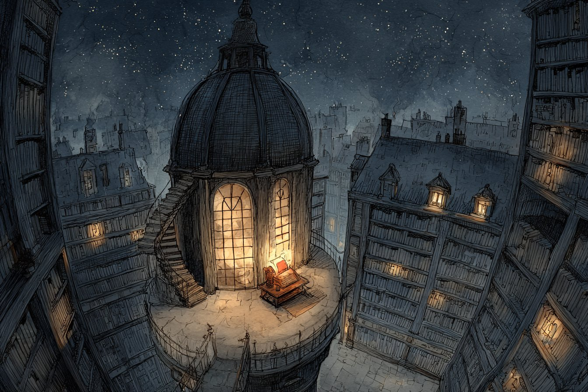
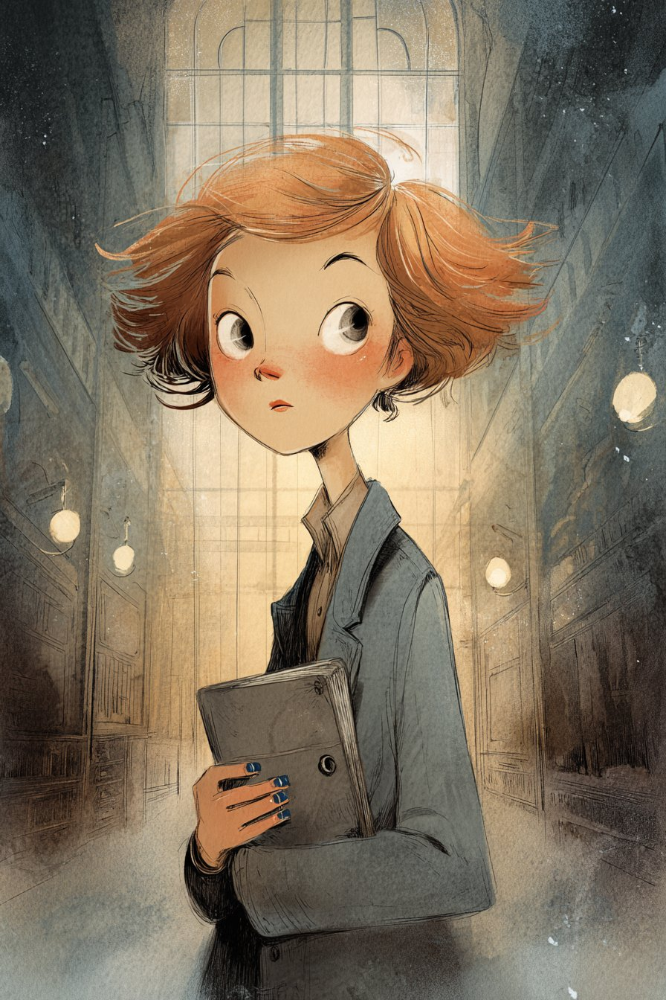
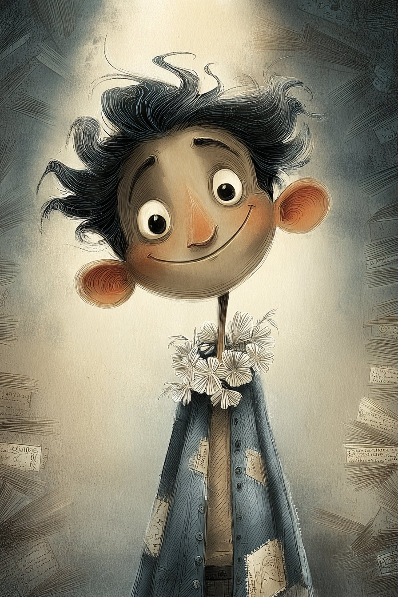
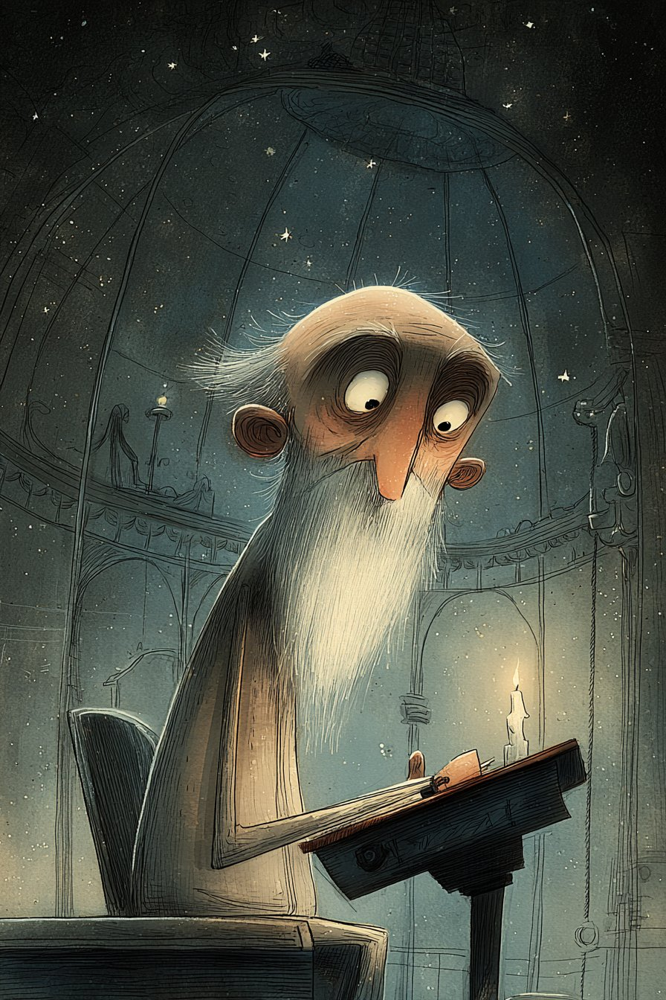
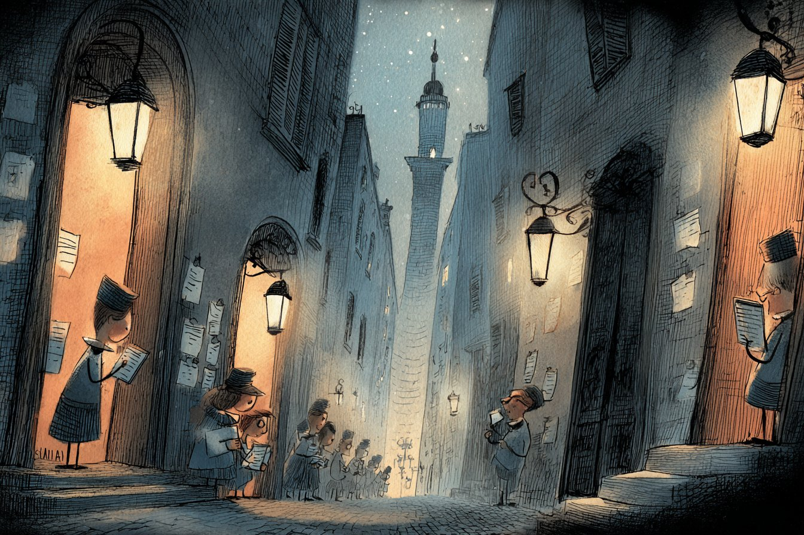
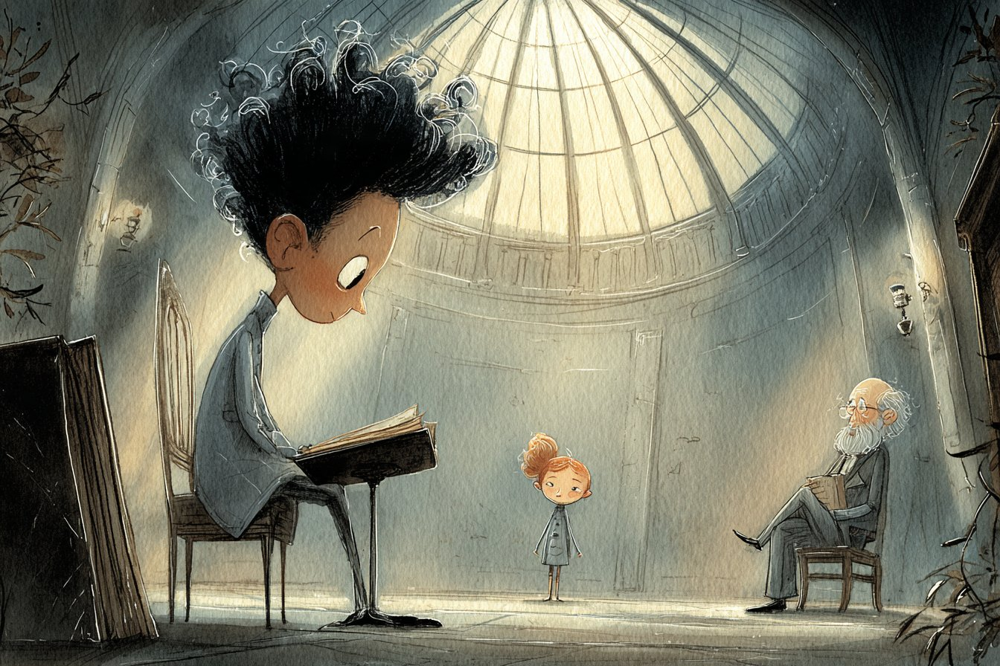
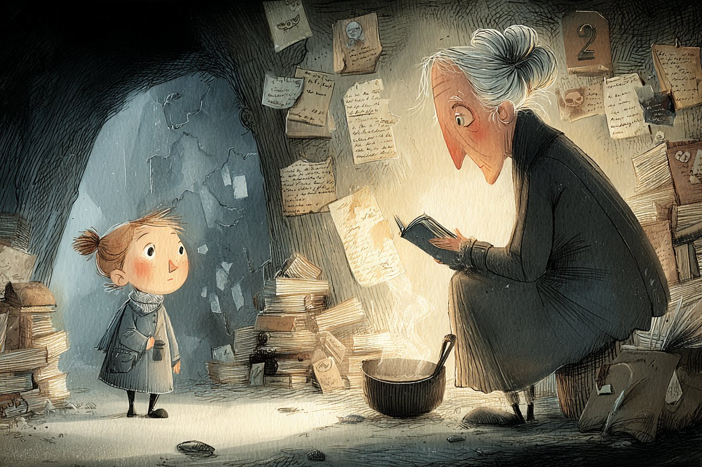

cover.jpgA fantasy fable in three parts
The Only Book
In Hollowmere there is only one book. Whoever reads it to the last page will know everything — and will never wonder about anything again. When her best friend is chosen to read it, a clerk who secretly collects questions has two days to find out what the Book cannot contain.
Start reading →Chapters
Characters

mira.jpgMira Vell
Protagonist · clerk of the Third Answer Hall
Looks: 16, short copper hair, ink-blue fingers, grey wool coat with eleven pockets.
Personality: Fast, stubborn, endlessly curious; reads the questions she is only meant to sort.
Wants: To keep her friend — and her city — able to wonder.
Key: A secret notebook: The Book of Questions.

kai.jpgKai Dorran
The chosen Reader
Looks: 17, tall and sunburnt, a patched blue jacket that looks like a map.
Personality: Warm, brave, laughs when he is frightened.
Wants: To find out where the water went and save his sister's dry farm.
Key: Conflict: he trades his questions for answers — and starts to lose himself.

orren.jpgOrren Hale
The Keeper
Looks: Very old, pale silver eyes, white beard, robe of undyed linen.
Personality: Knows everything; has not been surprised or curious for fifty years.
Wants: To be surprised one more time — though he cannot act for anyone.
Key: Key object: the Book itself, and the riddle about what it cannot contain.
Locations

lantern-street.jpgLantern Street
Part I
Cobbled street of Answer Halls; tall windows, open doors, iron lamps shaped like open books. People write questions on grey cards and wait a week for answers.

tower-room.jpgThe Tower of the Single Book
Parts I–III
999 steps lined with perfectly empty shelves; at the top a round room under a glass dome of stars, a black stone lectern and the earth-brown Book.

margins-cave.jpgThe Margins
Part III
White salt plains beyond the walls. Stones carved with questions lead to a firelit cave where the Askers cover every wall with handwriting and stitch their own books.